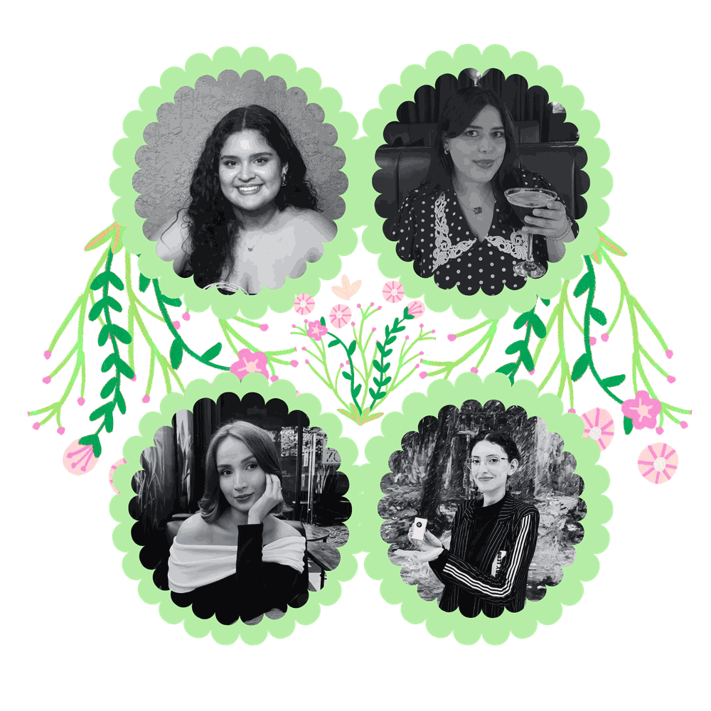
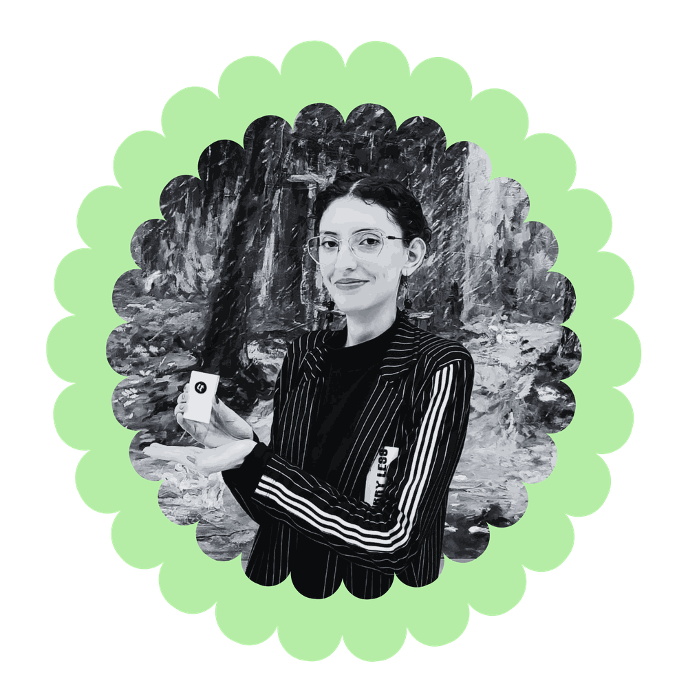

Behind every recipe, story, and magical detail, there is a team of four students who brought this enchanted kitchen to life.
Fairy Cooking was created through our shared passion for creativity, storytelling, design, and the little moments that make food special. Together, we combined our skills and imagination to build a space where fantasy worlds and culinary experiences come together.
Meet the dreamers, creators, and storytellers behind Fairy Cooking.
General Director and Recipe Writer
Leading the creative vision of Fairy Cooking, Iliana oversees the project's direction while bringing stories and flavors together through imaginative recipes.
Web Developer
Responsible for transforming ideas into a functional digital experience, Josie helps build the structure and interactive elements of Fairy Cooking.
Content Creator and Marketing
Creates the content strategy and helps share the Fairy Cooking experience, connecting the project with its audience through creative communication.

Web Designer and Community Manager
Designs the visual identity and user experience while managing the community side of Fairy Cooking, keeping the magical world alive online.